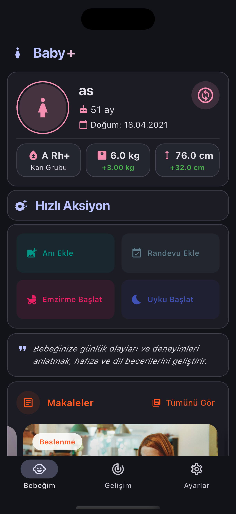
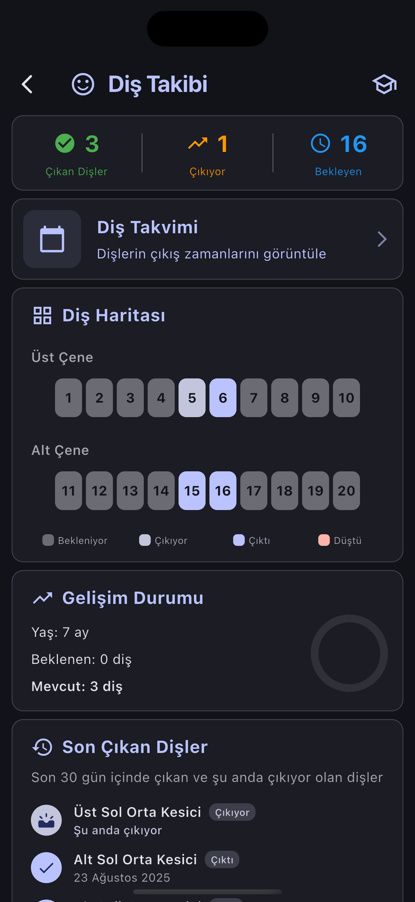
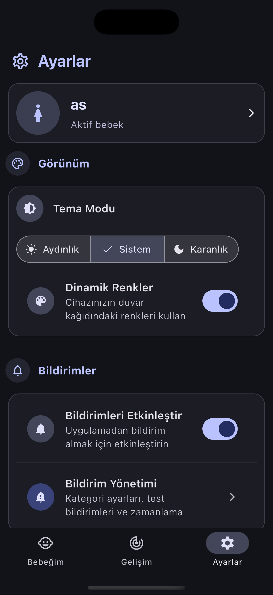
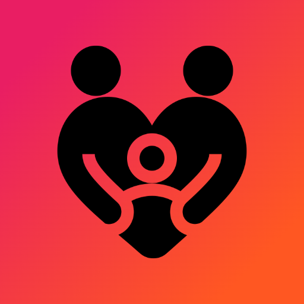

Her ilki kaydet,
hicbir ani kacirma.
Bebeginin gelisimini takip et, ozel anlari kaydet ve ebeveynlik yolculugunda sana rehberlik edecek ipuclari al.
BabyPlus, ebeveynlerin bebeklerinin gelisimini kapsamli sekilde takip edebilmeleri icin tasarlandi. Buyume, beslenme ve saglik takibi ile yolculuguna eslik eder.
Bebeginin ihtiyaci olan her sey
Buyumeden uykuya, asilardan doktor randevularina kadar ebeveynligi kolaylastiran araclar.
Gelisim Takibi
Boy, kilo ve bas cevresi ile bebeginin buyumesini grafiklerle izle.
Beslenme & Uyku
Emzirme, mama ve uyku kayitlarini tut, duzeni kolayca gor.
Asi Takvimi
Asi zamanlarini hatirlaticilarla kacirmadan takip et.
Fotograf Albumu
Ilk gulusten ilk adima, ozel anlari albumunde sakla.
Doktor Randevu
Kontrol randevularini planla ve hatirlaticilar al.
Veri Yedekleme
Tum kayitlarini guvenle yedekle, hicbir aniyi kaybetme.
Dogru zamanda dogru asi
Adim adim asi yolculugu
BabyPlus asi takvimini bebeginin dogum tarihine gore olusturur; yaklasan asilar icin zamaninda hatirlatir, tamamlananlari isaretler. Boylece tek bir asiyi bile kacirmazsin.
Hepatit B (1. doz)
Tamamlandi
5'li Karma + KPA
Tamamlandi
5'li Karma (2. doz)
Yaklasiyor
OPA + Hepatit B
Planlandi
Uygulamadan gorunumler




Bebeginin hikayesi BabyPlus'ta baslasin
Hemen indir, ilk kaydini olustur ve o kucuk anlari sakla.